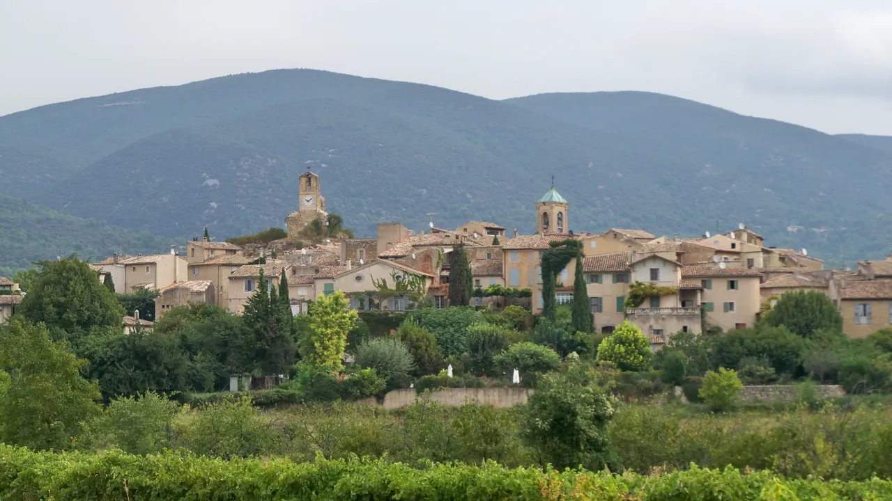
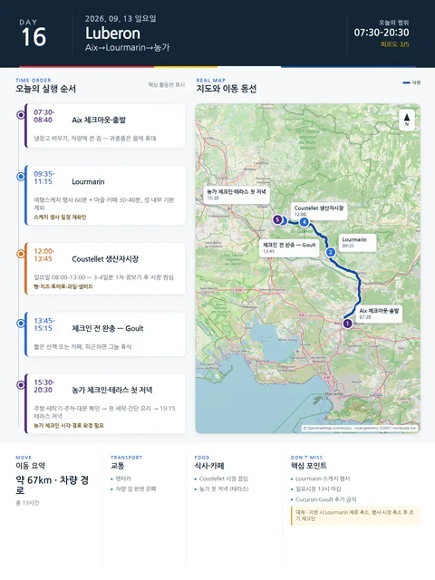

Day 16 · 9/13 일 · Luberon

오늘의 주요 장소

거점 이동양쪽 챕터
- 핵심 실행
- Lourmarin→Coustellet→농가
- 권장 출발
- 08:30 체크아웃
- 완충
- 시장·장보기·농가진입 90분
- 예약
- 1건 — 완료 0 · 미확정 1 · 현황
이동일 체크리스트
- 출발·체크아웃08:30 체크아웃
- 경유·핵심Lourmarin→Coustellet→농가
- 완충시장·장보기·농가진입 90분
- 지연 시 생략Lourmarin 체류 축소
- 대체안행사·시장 축소 후 조기체크인
- 잠금·예약농가·행사
실행성 감사의 값을 이동 순서로 재배열한 것이다. 체크인 시각·주차 등 미확정 값은 확정 후 채운다.
시간표
Aix
| 시간 | 일정 | 실행 포인트 |
|---|---|---|
| 07:30–09:15 | 아침·최종정리·체크아웃 | 냉장고·쓰레기·주차카드 확인 |
| 09:15–10:15 | Aix→Lourmarin | 차량 내 짐 완전은폐 |
| 10:30–13:30 | Lourmarin | 마을·스케치행사·가벼운 점심 |
| 13:30 이후 | Coustellet 장보기·농가 체크인 | 해지기 전 진입 |
Luberon
| 시간 | 일정 | 실행 포인트 |
|---|---|---|
| 07:30–08:30 | 엑상 숙소 아침·체크아웃 | 냉장고 비우기, 농가 첫날 간식과 물 준비 |
| 08:40 | Aix 출발 | 차량에 모든 짐이 있으므로 귀중품은 몸에 휴대 |
| 09:35–11:15 | Lourmarin 산책 + 여행스케치 행사 | 행사 60분, 마을·카페 30–40분. 성 내부는 기본 제외 |
| 11:20–12:00 | Lourmarin → Coustellet | D973·D2 계열, 실제 교통 확인 |
| 12:00–13:00 | Coustellet 생산자시장 | 일요일 08:00–13:00. 현지 생산자 식재료로 3–4일분 1차 장보기 |
| 13:00–13:45 | 시장 점심·차량 정리 | 빵·치즈·토마토·과일·샐러드 또는 간단한 현지식 |
| 13:45–15:15 | 체크인 전 완충시간 | 숙소 인근 Goult 짧은 산책 또는 카페. 피곤하면 그늘에서 휴식 |
| 15:30–16:30 | 농가 체크인 | 주방·세탁기·쓰레기·주차·대문·야간 조명·테라스 확인 |
| 16:30–18:00 | 농가 적응 | Julia 휴식·산책, Jason 정원·테라스 답사. 수영장은 이용 가능할 때만 선택 |
| 18:00–19:15 | 첫 세탁·간단한 요리 | 시장 식재료로 샐러드, 치즈, 빵, 달걀 또는 파스타 |
| 19:15–20:30 | 테라스 첫 저녁 | 와인은 운전이 끝난 뒤 소량. 일몰 방향 파악 |
피로도
3/5
이 날의 장소
일자별 시간표와 본문 표기에서 찾은 것이다. 하루의 전부가 아니라 장소 카드가 있는 것만 담는다.
이 날의 메모
Aix
Aix 체크아웃, Lourmarin을 거쳐 Luberon 농가로
- 오늘의 결론: 농가 체크인 안정성이 Lourmarin 추가관광보다 우선이다.
실행 시간표
Luberon
엑상 → Lourmarin 여행스케치 행사 → Coustellet 생산자시장 → 농가
- 오늘의 결론: 이동·행사·시장·체크인이 겹치지만 보행거리는 길지 않다.
9월 13일에는 Lourmarin의 9e Salon du Carnet de Voyage(Lourmarin des Carnets) 마지막 날이 열린다. 행사 일정은 Lourmarin des Carnets 2026-09-12~13 · 50 carnettistes 이고 시간·입장료는 공식 미게시다. 입장료 €6–10 범위는 2026-08 확인 · 출발 전 재확인. 일반적인 마을 산책보다 Jason에게 특별한 가치가 있으므로, 이번 이동일의 핵심으로 둔다.
실행 시간표
오늘 꼭 해볼 것
- 여행스케치 행사에서 마음에 드는 화가·스케치북 2–3개 기록하기
- Coustellet 시장에서 생산자에게 직접 제철 과일과 치즈를 사기
- 체크인 직후 농가의 주방·세탁기·대문·야간 진입·테라스 사용조건을 확인하기
- 첫날 저녁은 외식보다 테라스 식사로 농가체류의 리듬을 시작하기
대안 대책 (우천·휴관·교통 장애)
- 여행스케치 행사 관심이 낮아지면 Lourmarin 마을 60분으로 축소
- 시장에 늦으면 Coustellet 슈퍼에서 최소 장보기 후 농가로 직행
- 행사 혼잡이 심하면 Lourmarin 대신 Roussillon의
Livre en fête를 선택할 수 있으나, 동선은 덜 효율적
상세 실행 확인
- 최고 리스크
- 체크인·냉장식품·농가접근
- 우선 삭제
- Lourmarin 체류 축소
- 대체안
- 행사·시장 축소 후 조기체크인
- 식사·휴식
- Lourmarin 점심
- 잠금 필요
- 농가·행사
Google 실행지도
Aix → Luberon — Lourmarin 경유 농가 체크인
지도 펼치기
지도는 펼칠 때만 불러옵니다.
Daily Action Map

실제 좌표와 OpenStreetMap을 사용한 실행용 요약입니다. 도로·대중교통 상황은 출발 직전에 다시 확인하세요.